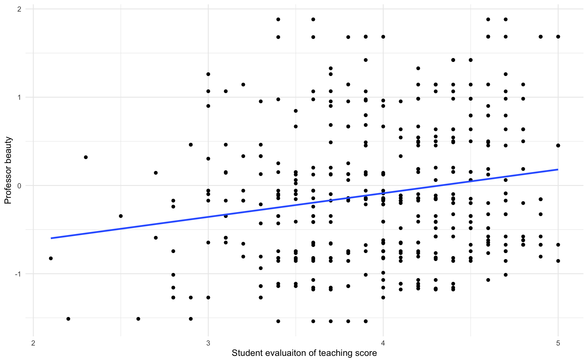

HW 01 - R, Posit, Git, and GitHub
Meet the toolkit
The goal of this assignment is to introduce you to R, Posit, Git, and GitHub, which you’ll be using throughout the course both to learn the data science concepts discussed in the course and to analyze real data and come to informed conclusions.
Getting started
Prerequisites
This assignment assumes that you have reviewed the lectures titled “02-Meet the toolkit”. If you haven’t yet done so, please pause and complete the following before continuing.
Terminology
We’ve already thrown around a few new terms, so let’s define them before we proceed.
R: Name of the programming language we will be using throughout the course.
Posit: An integrated development environment for R. In other words, a convenient interface for writing and running R code.
Git: A version control system.
GitHub: A web platform for hosting version controlled files and facilitating collaboration among users.
Repository: A Git repository contains all of your project’s files and stores each file’s revision history. It’s common to refer to a repository as a repo.
- In this course, each assignment you work on will be contained in a Git repo.
- For individual assignments, only you will have access to the repo. For team assignments, all team members will have access to a single repo where they work collaboratively.
- All repos associated with this course are housed in the course GitHub organization. The organization is set up such that students can only see repos they have access to, but the course staff can see all of them.
Starting slow
As the course progresses, you are encouraged to explore beyond what the assignments dictate; a willingness to experiment will make you a much better programmer! Before we get to that stage, however, you need to build some basic fluency in R. First, we will explore the fundamental building blocks of all of these tools.
Before you can get started with the analysis, you need to make sure you:
have a GitHub account (use your QUB email to register)
are a member of the course GitHub organization (share your username and email with lecturer to receive an invite)
are a member of the course Posit Cloud space (See Canvas Announcements for details)
If you failed to confirm any of these, it means you have not yet completed the prerequisites for this assignment. Please go back to Prerequisites and complete them before continuing the assignment.
Workflow
Note
IMPORTANT: If there is no GitHub repo created for you for this assignment, it means I didn’t have your GitHub username as of when I assigned the homework. Please let me know your GitHub username asap, and I can create your repo.
For each assignment in this course you will start with a GitHub repo that I created for you and that contains the starter documents you will build upon when working on your assignment. The first step is always to bring these files into Posit so that you can edit them, run them, view your results, and interpret them. This action is called cloning.
Then you will work in Posit on the data analysis, making commits along the way (snapshots of your changes) and finally push all your work back to GitHub.
The next few steps will walk you through the process of getting information of the repo to be cloned, cloning your repo in a new Posit Cloud project, and getting started with the analysis.
Step 1. Get URL of repo to be cloned
On GitHub, click on the green Code button, select HTTPS (this might already be selected by default, and if it is, you’ll see the text Use Git or checkout with SVN using the web URL jas in the image on the right). Click on the clipboard icon 📋 to copy the repo URL.
Step 2. Go to Q-RaP on Posit Cloud
Go to qrap.rstudio.cloud and then navigate to the course workspace via the left sidebar. It’s very important that you do this for two reasons:
- It’s only when you’re in the course workspace that you’ll be able to benefit from R packages I’ve pre-installed for you so that your project can be configured correctly.
- It’s only when you’re in the course workspace that your usage of RStudio Cloud won’t count towards the free usage limits.

Before you proceed, confirm that you are in the course workspace by checking out what’s on your top bar in RStudio Cloud.
Step 3. Clone the repo
In RStudio, click on the down arrow next to New Project and then choose New Project from Git Repository.
In the pop-up window, paste the URL you copied from GitHub, make sure the box for Add packages from the base project is checked (it should be, by default) and then click OK.

Hello RStudio!
RStudio is comprised of four panes.

- On the bottom left is the Console, this is where you can write code that will be evaluated. Try typing
2 + 2here and hit enter, what do you get? - On the bottom right is the Files pane, as well as other panes that will come handy as we start our analysis.
- If you click on a file, it will open in the editor, on the top left pane.
- Finally, the top right pane shows your Environment. If you define a variable it would show up there. Try typing
x <- 2in the Console and hit enter, what do you get in the Environment pane? Importantly, this pane is also where the Git interface lives. We will be using that regularly throughout this assignment.
Warm up
Before we introduce the data, let’s warm up with some simple exercises.
Note
The top portion of your R Markdown file (between the three dashed lines) is called YAML. It stands for “YAML Ain’t Markup Language”. It is a human friendly data serialization standard for all programming languages. All you need to know is that this area is called the YAML (we will refer to it as such) and that it contains meta information about your document.
Step 1. Update the YAML
Open the R Markdown (Rmd) file in your project, change the author name to your name, and knit the document.

Step 2: Commit
Then Go to the Git panel in your RStudio.
You should see that your Rmd (R Markdown) file and its output, your md file (Markdown), are listed there as recently changed files.
Next, click on Diff. This will pop open a new window that shows you the difference between the last committed state of the document and its current state that includes your changes. If you’re happy with these changes, click on the checkboxes of all files in the list, and type “Update author name” in the Commit message box and hit Commit.

You don’t have to commit after every change, this would get quite cumbersome. You should consider committing states that are meaningful to you for inspection, comparison, or restoration. In the first few assignments we will tell you exactly when to commit and in some cases, what commit message to use. As the semester progresses we will let you make these decisions.
Step 3. Push
Now that you have made an update and committed this change, it’s time to push these changes to the web! Or more specifically, to your repo on GitHub. Why? So that others can see your changes. And by others, we mean the course teaching team (your repos in this course are private to you and us, only). In order to push your changes to GitHub, click on Push.

This will prompt a dialogue box where you first need to enter your user name, and then your password. This might feel cumbersome. Bear with me… I will teach you how to save your password so you don’t have to enter it every time. But for this one assignment you’ll have to manually enter each time you push in order to gain some experience with it.
Thought exercise: Which of the above steps (updating the YAML, committing, and pushing) needs to talk to GitHub?1
Packages
R is an open-source language, and developers contribute functionality to R via packages. In this assignment we will use the following packages:
- tidyverse: a collection of packages for doing data analysis in a “tidy” way
- rosdata: a package that contains the datasets from one of the course textbooks called Regression and other stories (See Canvas for link to book)
We use the library() function to load packages. In your R Markdown document you should see an R chunk labelled load-packages which has the necessary code for loading both packages. You should also load these packages in your Console, which you can do by sending the code to your Console by clicking on the Run Current Chunk icon (green arrow pointing right icon).

Note that these packages also get loaded in your R Markdown environment when you Knit your R Markdown document.
Data
We will be using the beauty data from rosdata package which contains student teaching evaluations and some personal characteristics of the professors being evaluated.
Since the dataset is distributed with the package, we don’t need to load it separately; it becomes available to us when we load the package.
You can view the dataset as a spreadsheet using the View() function. Note that you should not put this function in your R Markdown document, but instead type it directly in the Console, as it pops open a new window (and the concept of popping open a window in a static document doesn’t really make sense…). When you run this in the console, you’ll see the following data viewer window pop up.
View(beauty)
You can find out more about the dataset by inspecting its documentation (which contains a data dictionary, name of each variable and its description), which you can access by running ?beauty in the Console or using the Help menu in RStudio to search for beauty.
Exercises
- According to the data viewer, how many evaluations are include the dataset?
🧶 ✅ ⬆️ Write your answer in your R Markdown document under Exercise 1, knit the document, commit your changes with a commit message that says “Completed Exercise 1”, and push. Make sure to commit and push all changed files so that your Git pane is cleared up afterwards.
- Again, according to the data viewer, how many variables do we have for evaluation?
🧶 ✅ ⬆️ Write your answer in your R Markdown document under Exercise 2, knit the document, commit your changes with a commit message that says “Completed Exercise 2”, and push. Make sure to commit and push all changed files so that your Git pane is cleared up afterwards.
- How many of the evaluations are for female professors? To do this you will need to count the frequencies of female indicator variable and display the results. The following code does exactly that.
Note
The two lines of code can be read as “Start with the beauty data frame, and then count the sum up the binary variable female, and display the results. The ‘and then’ in the previous sentence maps to %>%, the pipe operator, which takes what comes before it and plugs it in as the first argument of the function that comes after it.”
beauty %>%
summarise(no_of_female_professors=sum(female))🧶 ✅ ⬆️ Write your answer in your R Markdown document under Exercise 3. In this exercise you will not only provide a written answer but also include some code and output. You should insert the code in the code chunk provided for you, knit the document to see the output, and then write your narrative for the answer based on the output of this function, and knit again to see your narrative, code, and output in the resulting document. Then, commit your changes with a commit message that says “Completed Exercise 3”, and push. Make sure to commit and push all changed files so that your Git pane is cleared up afterwards.
Let’s also look how many professors there are at each age range and what is the dominant sex. For this we need to first group_by() the age, and then do the same counting we did before but using tally().
Note
Older professors are not as common
beauty %>%
group_by(age) %>%
tally(sort = TRUE)# A tibble: 35 × 2
age n
<int> <int>
1 52 47
2 47 41
3 57 28
4 43 25
5 62 25
6 33 23
7 42 22
8 50 19
9 51 19
10 60 18
# … with 25 more rowsBut this output isn’t exactly what we wanted. We wanted to know the most common sex of professors at each age.
beauty %>%
count(female, sort = TRUE) female n
1 0 268
2 1 195Let’s search for the number of male and female professors in at each age level. To do this, we can use the arrange() function. The first argument in the function is the variable we want to select the highest values of, which is n. The second argument is the number of rows to select, which is n = 5 for the top 5. It may be a bit confusing that both of these are n, but this is because we already have a variable called n in the data frame.
beauty %>%
group_by(female,age) %>%
tally(sort = TRUE) %>%
arrange(age)# A tibble: 52 × 3
# Groups: female [2]
female age n
<int> <int> <int>
1 1 29 1
2 1 31 6
3 0 32 11
4 1 33 18
5 0 33 5
6 1 34 8
7 0 34 3
8 0 35 9
9 1 35 3
10 1 36 4
# … with 42 more rows- Based on the previous output we can easily identify the most common sex at each professor age, but the output is sorted by
n(the frequencies) as opposed to being organized by thefemale. Build on the pipeline to arrange the results so that they’re arranged byfemalefirst, and thenn. This means you will need to add one more step to the pipeline, and you have two options:arrange(age, n)orarrange(n, age). You should try both and decide which one organizes the output by species and then ranks the names in order of frequency for each species.
🧶 ✅ ⬆️ Write your answer in your R Markdown document under Exercise 4. In this exercise you’re asked to complete the code provided for you. You should insert the code in the code chunk provided for you, knit the document to see the output, and then write your narrative for the answer based on the output of this function, and knit again to see your narrative, code, and output in the resulting document. Then, commit your changes with a commit message that says “Completed Exercise 4”, and push. Make sure to commit and push all changed files so that your Git pane is cleared up afterwards.
The following visualization plots the student evaluation of the professor against their assessed beauty. The diagonal line on the plot is the \(x = y\) line; fitted using OLS.
`geom_smooth()` using formula = 'y ~ x'
- Is the relationship between the two variables positive or negative? What does this mean in context of the data?
🧶 ✅ ⬆️ Now is a good time to commit and push your changes to GitHub with an appropriate commit message. Commit and push all changed files so that your Git pane is cleared up afterwards. Make sure that your last push to the repo comes before the deadline. You should confirm that what you committed and pushed are indeed in your repo that we will see by visiting your repo on GitHub.
Footnotes
Only pushing requires talking to GitHub, this is why you’re asked for your password at that point.↩︎